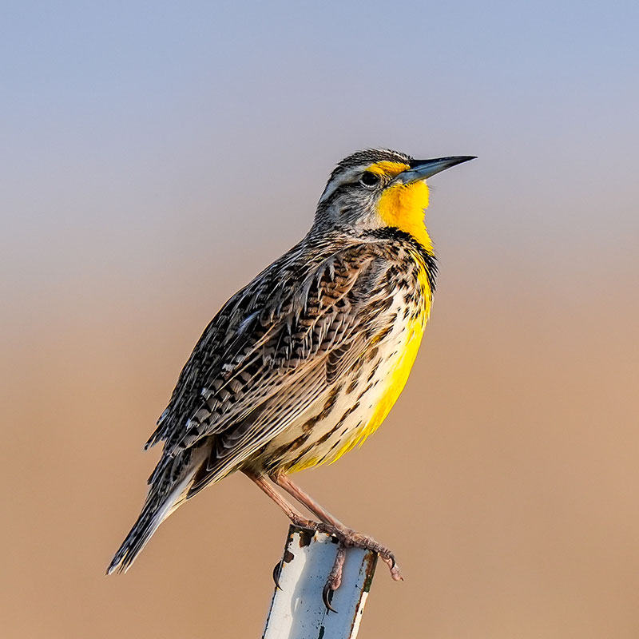

This website gives a brief overview of some of my favorite birds in Montana. It also shares some interesting facts about each species. An honerable mention which was not included in this website is the Western Meadowlark, which is the state bird of Montana. It is known for its bright yellow chest and distinctive song, which can be heard throughout the state.
